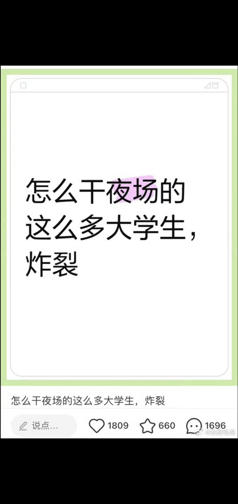
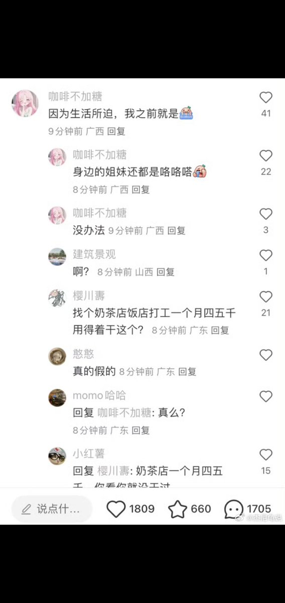

谭担面
@Okada_te_resa
@LIGHTSEEKER1984 十女九卖算你妈一个


The Gulag Bot
@LIGHTSEEKER1984
一个七人女寝，竟然全员做鸡
果然是十女九卖，这就是国女🐔本盘
蝈女真脏，怪不得一个宿舍八个群，原来是为了接客和抢客源🤣
亚洲马桶，臭名远扬
一群烂裤裆，哪来的脸要彩礼，江山易改本性难移，国女的妓女思维根深蒂固
男人就不该给这群🐔退路，连嫖她们都算玷污了自己，男人就该让她们自生自灭 https://t.co/uOusyYDHIe